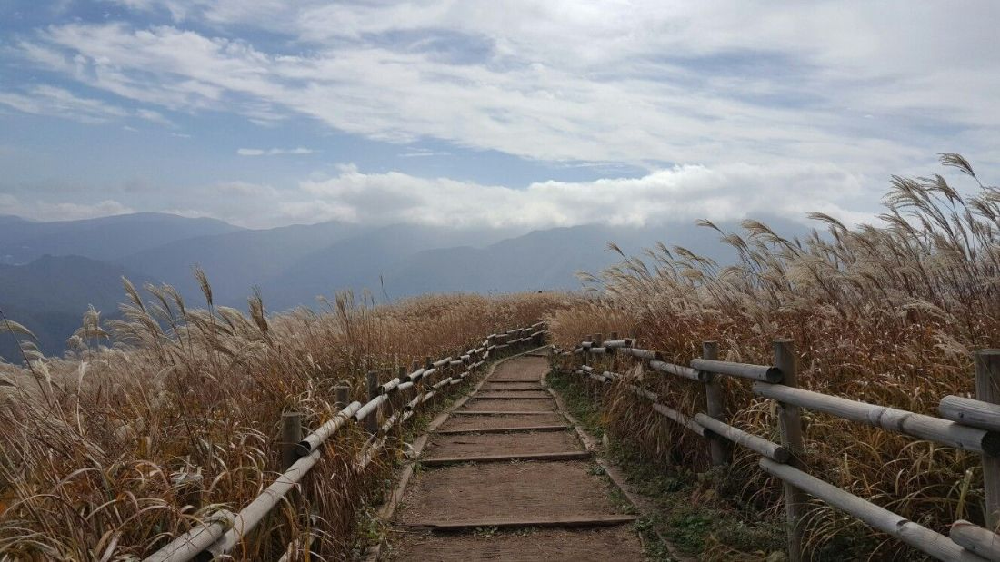

27 가지
산행 준비
당일인지 1박인지, 어느 대피소에 묵는지에 따라 챙길 것이 달라집니다.
0 / 0 챙김
고른 것은 이 브라우저에만 저장된다.
왜 이만큼 챙기는가
산 위 기온은 해발이 100 m 높아질 때마다 약 0.6 °C 낮아진다. 입구가 20 °C여도 잣두루봉(1,696 m)은 12 °C 안팎이고, 바람이 초속 10 m이면 몸이 느끼는 온도는 더 내려간다. 그래서 10월에도 보온 옷과 장갑을 넣는다.
물은 걷는 동안 한 시간에 0.5 L 안팎을 마신다. 식수가 없는 대피소에 묵으면 저녁과 다음 날 아침에 쓸 물까지 지고 올라야 하므로 1인 3.5 L 이상을 챙긴다.
해가 지면 산길은 금방 어두워진다. 10월 일몰은 18시 무렵이며, 대피소 도착이 늦어질 때를 생각해 당일 산행에도 헤드랜턴을 넣는다.
